[nltk_data] Downloading package punkt to /home/jovyan/nltk_data...
[nltk_data] Package punkt is already up-to-date!
[nltk_data] Downloading package stopwords to /home/jovyan/nltk_data...
[nltk_data] Package stopwords is already up-to-date!
[nltk_data] Downloading package vader_lexicon to
[nltk_data] /home/jovyan/nltk_data...
[nltk_data] Package vader_lexicon is already up-to-date!
[nltk_data] Downloading package opinion_lexicon to
[nltk_data] /home/jovyan/nltk_data...
[nltk_data] Package opinion_lexicon is already up-to-date!
[nltk_data] Downloading package averaged_perceptron_tagger to
[nltk_data] /home/jovyan/nltk_data...
[nltk_data] Package averaged_perceptron_tagger is already up-to-
[nltk_data] date!
[nltk_data] Downloading package wordnet to /home/jovyan/nltk_data...
[nltk_data] Package wordnet is already up-to-date!
True
target_url ="https://www.gutenberg.org/files/1342/1342-0.txt"response = requests.get(target_url)pnp_string = response.textpnp_string = pnp_string.split('*** START OF THE PROJECT GUTENBERG EBOOK PRIDE AND PREJUDICE ***')[1]pnp_string = pnp_string.split('*** END OF THE PROJECT GUTENBERG EBOOK PRIDE AND PREJUDICE ***')[0]pnp_string = pnp_string.lower()target_url ="https://www.gutenberg.org/files/105/105-0.txt"response = requests.get(target_url)persuasion_string = response.textpersuasion_string = persuasion_string.split('*** START OF THE PROJECT GUTENBERG EBOOK PERSUASION ***')[1]persuasion_string = persuasion_string.split('*** END OF THE PROJECT GUTENBERG EBOOK PERSUASION ***')[0]persuasion_string = persuasion_string.lower()target_url ="https://www.gutenberg.org/files/158/158-0.txt"response = requests.get(target_url)emma_string = response.textemma_string = emma_string.split('*** START OF THE PROJECT GUTENBERG EBOOK EMMA ***')[1]emma_string = emma_string.split('*** END OF THE PROJECT GUTENBERG EBOOK EMMA ***')[0]emma_string = emma_string.lower()target_url ="https://www.gutenberg.org/files/161/161-0.txt"response = requests.get(target_url)sns_string = response.textsns_string = sns_string.split('*** START OF THE PROJECT GUTENBERG EBOOK SENSE AND SENSIBILITY ***')[1]sns_string = sns_string.split('*** END OF THE PROJECT GUTENBERG EBOOK SENSE AND SENSIBILITY ***')[0]sns_string = sns_string.lower()
Pride and Prejudice: - total number of chapters: 61 - total number of words: 156,644 words - total number of volumes: 3
The datasets are directly from Project Gutenberg, which houses public domain novels. Therefore, I assume that the data is accurate.
For data preprocessing, I will be removing any stopwords, unneccessary characters, and make the entire text lowercase to easily process the data.
Methods:
The data that I used for this project was sourced from Project Gutenberg, which houses public domain novels. Therefore, I assume that the data is accurate. For this project, I chose to create 8 data visualizations using Python: 6 visualizations focus primarily on ‘Pride and Prejudice’ and 2 visualizations compare ‘Pride and Prejudice’ to other Jane Austen novels like ‘Sense and Sensibility’, ‘Emma’, and ‘Persuasion’. For data pre-processing, I removed any stopwords, unnecessary characters, and made sure the entire text was lowercase to easily process the data.
For my first visualization, I chose to focus on word frequency in ‘Pride and Prejudice’, by utilizing NLTK library, stemming words with the porterstemmer, and used frequency distribution to calculate the frequency distribution of those stemmed words. I plotted the top 15 most frequently used words in the novel into a bar chart using Matplotlib.
For the second visualization, I chose to focus on the adjectives that are most frequently used by Jane Austen in ‘Pride and Prejudice’. When I read ‘Pride and Prejudice’, I always thought that the writing was very descriptive, hence why I wanted to see what types of adjectives were most common. I utilized POS tagging to get the Penn Treebank letters that correspond with the adjectives and filtered through to get all the adjectives using a for loop. Similar to the first visualization, I then went ahead and used the frequency distribution to understand the frequency of the adjectives in the novel. Then, I created a bar chart to display the results.
For the third visualization, I did the same steps as I did for the second visualization, but instead, I chose to focus only on the nouns in the novel, thus switching out the Penn Treebank letters from Adjectives to Nouns. There are a lot of characters and subjects that are featured in the book, so I wanted to see which nouns occurred most frequently in a dense book like ‘Pride and Prejudice’.
For the fourth visualization, I did a character network visualization to see how the characters are connected with each other and further understand their relationships. I used the NetworkX library to create this graph. I manually inputted each character into the character variable, and then using that to create the nodes. Then, I created the edges by also manually inputting the characters and their relationship to each other. For this specific visualization, I did not include all the characters from the novel because they are not significant characters in the story and I wanted to see which characters had the most interaction with other characters.
For the fifth visualization, I chose to do a sentiment analysis on ‘Pride and Prejudice’ but see how the sentiment changes over the course of the novel. To conduct this analysis, I first split up the novel (pnp_string) by chapter using the split() method, scanning the text and splitting by every word ‘chapter’. Then, I utilized VADER to assess the sentiment of the text and to get a calculated score for each chapter. After, I proceeded to use a for loop that looped through all 61 chapters, storing the chapter number and sentiment scores into separate lists, then plotting it using a line graph to get a better visualization of the gradual fluctuation in sentiment scores over the course of the novel.
For the sixth visualization, I chose to focus on the most common positive and negative words in ‘Pride and Prejudice’ to understand which words are the most frequently used in the novel based on their sentiment. I created positive, negative, and neutral words list and divided up the words using a for loop. I also used VADER sentiment analysis tool to get a score and divide it up with the if-else statement, and added to the list I created. Then, I did a frequency distribution to calculate the positive and negative words separately, thus getting the 15 most common positive and negative words, which are displayed using Matplotlib in a horizontal bar plot. For the seventh and eighth visualization, I wanted to compare ‘Pride and Prejudice’ to other Jane Austin novels to compare her writing style and see if it has stayed consistent or if there are any major changes that have occurred in her writing style between writing each text. I specifically chose to focus on ‘Sense and Sensibility’ (published in 1811), ‘Pride and Prejudice’ (published in 1813), ‘Emma’ (published in 1815), and ‘Persuasion’ (published in 1817) because there is a pretty even gap between each novel’s publishing, which is perfect for analyzing if Jane Austen’s writing has evolved.
The seventh visualization is the same as the sixth visualization, but my purpose of choosing to analyze the most common positive and negative words is to see which words are similar to ‘Pride and Prejudice’ that may be similar or different in terms of writing style and the overall sentiment in Jane Austen’s writing style.
Lastly, the eighth visualization, which are divided into three, is a comparison of the type of words that are frequently used the most in Jane Austen novels, comparing all four novels. I compared the novels’ nouns, adjectives, and verbs, by using the pos_tag() function to see which Penn Treebank were with each word in the novels, which I focused only on ‘NN’ for noun, ‘VB’ for verb, and ‘JJ’ for adjective. After tagging the words, I used the frequency distribution function to analyze the occurrence of each of the words. Finally, I used matplotlib to plot the frequency distribution into bar charts, dividing up into four novels and their dates.
Results
# 1. Word Frequency for Pride and Prejudicepnp_words = word_tokenize(pnp_string)myStopWords =list(punctuation) + stopwords.words('english')wordsNoStop = [w for w in pnp_words if w.lower() notin myStopWords]porterstemmed = []for w in wordsNoStop: pstemmer = PorterStemmer() porterstemmed.append(pstemmer.stem(w))word_freq = nltk.FreqDist(porterstemmed)top_words = word_freq.most_common(15)plt.figure(figsize=(12,6))plt.bar([w[0] for w in top_words], [w[1] for w in top_words], color ="tomato")plt.title('Top 15 Words in Pride and Prejudice')plt.xlabel('Word')plt.ylabel('Frequency')plt.xticks(rotation=90)plt.show()
/opt/conda/lib/python3.10/site-packages/IPython/core/pylabtools.py:152: UserWarning: Glyph 128 (\x80) missing from current font.
fig.canvas.print_figure(bytes_io, **kw)
/opt/conda/lib/python3.10/site-packages/IPython/core/pylabtools.py:152: UserWarning: Glyph 157 (\x9d) missing from current font.
fig.canvas.print_figure(bytes_io, **kw)
/opt/conda/lib/python3.10/site-packages/IPython/core/pylabtools.py:152: UserWarning: Glyph 156 (\x9c) missing from current font.
fig.canvas.print_figure(bytes_io, **kw)
When analyzing the top 15 words in ‘Pride and Prejudice’, it is clear that there are more frequently used words as opposed to others. There were some words that were included that were not correctly processed during the tokenization process, likely due to the type of format from Project Gutenberg. Regardless, there is still significant data that show that the most frequently occurring words were ‘Mr.’, ‘Elizabeth’, ‘Could’, ‘Would’, ‘Said’, ‘Darci’ (which is Darcy), ‘Mrs.’, and ‘Much’. Surprisingly, despite being the main characters in the novel, Elizabeth and Darcy are not the top two most occurring words, but their names are still included in the top 15, which indicates that they both have a very significant role in the novel. Another point that I found interesting was how the words ‘would’ and ‘could’ were among the top 15, which could potentially indicate that many of the characters are often thinking about what could or what would, whether it be their actions, or they are thinking about it. ‘Said’ is another frequently occurring word, which highlights how the novel is centered around dialogue and the theme of communication, or lack thereof.
# 2. Most Common Adjectivespnp_words = word_tokenize(pnp_string)pnp_pos = nltk.pos_tag(pnp_words)adjectives = []for word in pnp_pos:if word[1] in ['JJ', 'JJS', 'JJR']: adjectives.append(word[0])dfpnp = nltk.FreqDist(adjectives)df = pd.DataFrame(list(dfpnp.items()), columns=['Word', 'Frequency'])df = df.sort_values('Frequency', ascending=False)plt.figure(figsize=(10, 5))plt.bar(df['Word'][:10], df['Frequency'][:10], color ="peachpuff")plt.title('Most Common Adjectives in Pride and Prejudice')plt.xlabel('Adjective')plt.ylabel('Frequency')plt.show()
/tmp/ipykernel_189/3012994614.py:16: FutureWarning: The behavior of `series[i:j]` with an integer-dtype index is deprecated. In a future version, this will be treated as *label-based* indexing, consistent with e.g. `series[i]` lookups. To retain the old behavior, use `series.iloc[i:j]`. To get the future behavior, use `series.loc[i:j]`.
plt.bar(df['Word'][:10], df['Frequency'][:10], color = "peachpuff")
After analyzing the most common adjectives in this graph, it was surprising to see which words came up as the most ‘common’. Words like ‘I’, ‘such’, ‘other’, ‘much’, ‘miss’, ‘mr.’, ‘own’, ‘little’, ‘more’, and ‘good’ are generally more neutral words as opposed to positive or negative, but they still reveal the type of tone that persists throughout the novel. For example, the frequent occurrence of the word ‘little’ reveals how the characters in the novel are often downplaying the situation or describing things to be smaller than they really are.
#3. Most Common Nounspnp_words = word_tokenize(pnp_string)pnp_pos = nltk.pos_tag(pnp_words)nouns = []for word in pnp_pos:if word[1] in ['NN']: nouns.append(word[0])pnp_freqdist = nltk.FreqDist(nouns)df = pd.DataFrame(list(pnp_freqdist.items()), columns=['Word', 'Frequency'])df = df.sort_values('Frequency', ascending=False)plt.figure(figsize=(10, 5))plt.bar(df['Word'][:10], df['Frequency'][:10], color ="skyblue")plt.title('Most Common Nouns in Pride and Prejudice')plt.xlabel('Noun')plt.ylabel('Frequency')plt.show()
/tmp/ipykernel_189/670723290.py:16: FutureWarning: The behavior of `series[i:j]` with an integer-dtype index is deprecated. In a future version, this will be treated as *label-based* indexing, consistent with e.g. `series[i]` lookups. To retain the old behavior, use `series.iloc[i:j]`. To get the future behavior, use `series.loc[i:j]`.
plt.bar(df['Word'][:10], df['Frequency'][:10], color = "skyblue")
/opt/conda/lib/python3.10/site-packages/IPython/core/pylabtools.py:152: UserWarning: Glyph 128 (\x80) missing from current font.
fig.canvas.print_figure(bytes_io, **kw)
/opt/conda/lib/python3.10/site-packages/IPython/core/pylabtools.py:152: UserWarning: Glyph 157 (\x9d) missing from current font.
fig.canvas.print_figure(bytes_io, **kw)
The most frequently occurring nouns were quite similar to the most common adjectives, with repeating words like “I”, which could indicate the strong emphasis on personal perspective and experiences of the characters, especially for Elizabeth Bennet, who is frequently speaking in first person perspective, further emphasizing the importance of dialogue in ‘Pride and Prejudice’. The nouns ‘Mr.’ and ‘Darcy’ also occurs as the most common noun, being ranked 3rd, which shows that Mr. Darcy plays a significant role throughout the novel, and is a crucial character to the overall plot and themes. Jane, Elizabeth, and Bingley are also frequently occurring nouns, but to my surprise, Jane was higher in rank than Elizabeth, despite Elizabeth being the main protagonist, which indicates the more extroverted spirit that Jane has and the more introverted character that Elizabeth portrays. ‘Time’ is another common noun, which points to the overall theme of the novel that centers around how the passage of time allows for relationships to form.
Moving forward to the character network analysis, this visualization presents a better display of the complicated and overwhelming connections throughout this novel. Mr. Darcy, who was also the most frequently occurring noun, is also the character with the most connections to other characters, which shows how he is the character at the center of the story, and how the characters around him allow him to be influenced and change from the cold-hearted individual into a beloved character.
#5. Sentiment Analysis of Pride and Prejudice based on Chapterchapters = pnp_string.split('chapter')sentScores = []chapterNumbers = []for i inrange(1, 62): chapterText ='Chapter'+ chapters[i] sentScore = sia.polarity_scores(chapterText)['compound'] sentScores.append(sentScore) chapterNumbers.append(i)plt.plot(chapterNumbers, sentScores, color ="lightseagreen")plt.xlabel('Chapter Number')plt.ylabel('Sentiment Score')plt.title('Sentiment Analysis of Pride and Prejudice')plt.show()
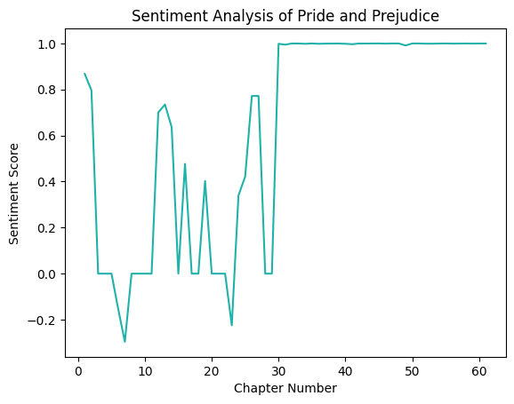
For the sentiment analysis of ‘Pride and Prejudice’, focusing on the chapters allowed for me to analyze the gradual changes of sentiment throughout the novel. I chose to use a line plot because it allowed for me to see the different changes that happen during each chapter. For the first 28-30 chapters, there are extreme fluctuations starting from negative in the first chapter to quickly positive, which could indicate the scenes where Elizabeth begins to grow hatred for Mr. Darcy really quickly, and scenes where Jane and Bingley fall in love quickly. At the massive dip of chapters 28-30, this is the scene where Elizabeth is disgusted with Mr. Collins’ proposal, and how Lady Catherine de Bourgh is criticizing Elizabeth and the Bennet family for their “lower class” behavior. However, after 28-30 chapters, the sentiment scores change to being constantly positive and remains that way throughout the latter half of the novel (except the very small dip that occurs around 48-49, possibly because of the scene with Lydia and Wickham’s sudden elopement that causes everyone to be upset). This is because Elizabeth and Mr. Darcy finally confess their love for eachother and sentiment is only positive from that point on. Each fluctuation shows that there was a significant moment in the novel.
# 6. Positive/negative words for Pride and Prejudice:positive_words = []negative_words = []neutral_words = []for word in pnp_words: scores = sia.polarity_scores(word)if scores ['compound'] ==0: neutral_words.append(word)elif scores ['compound'] >0: positive_words.append(word)elif scores ['compound'] <0: negative_words.append(word)dfpos = nltk.FreqDist(positive_words)dfneg = nltk.FreqDist(negative_words)most_common_positive = dfpos.most_common(15)most_common_negative = dfneg.most_common(15)plt.barh(range(len(most_common_positive)), [val[1] for val in most_common_positive], color ="forestgreen")plt.yticks(range(len(most_common_positive)), [val[0] for val in most_common_positive], color ="forestgreen")plt.xlabel('Frequency of Words')plt.title('Most Common Positive Words in Pride and Prejudice')plt.show()plt.barh(range(len(most_common_negative)), [val[1] for val in most_common_negative], color ="crimson")plt.yticks(range(len(most_common_negative)), [val[0] for val in most_common_negative], color ="crimson")plt.xlabel('Frequency of Words')plt.title('Most Common Negative Words in Pride and Prejudice')plt.show()
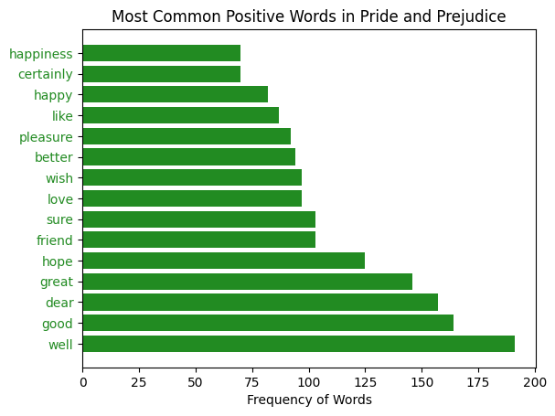
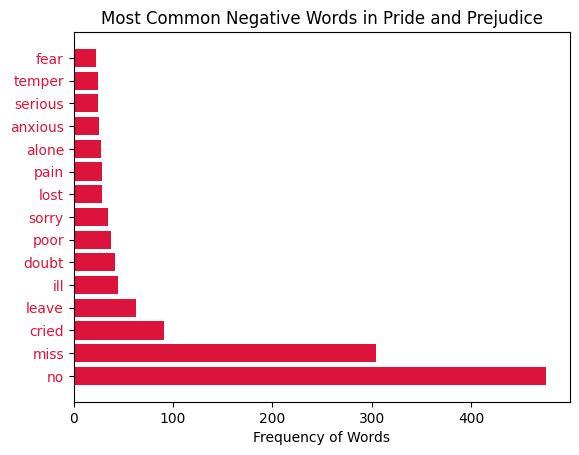
This graph, which highlights the most common positive and negative words in ‘Pride and Prejudice’, revealing the overall tone throughout the novel. The common positive words show how characters are good, hopeful, in love, are wishing, and overall expressing happiness. However, the common negative words are expressing words like “no”, pain, doubt, anxiety, fear, and loneliness. This also shows that the characters have doubt, fear, and anxiety. By seeing the common positive and negative words, I can gain a better understanding of the types of words that Jane Austen uses to describe challenges or highlight moments that the characters face throughout the novel.
Comparing Different Jane Austen Texts:
#7 Comparing most positive and negative words from 3 additional texts of Jane Austenpositive_words = []negative_words = []neutral_words = []for word in persuasion_words: scores = sia.polarity_scores(word)if scores ['compound'] ==0: neutral_words.append(word)elif scores ['compound'] >0: positive_words.append(word)elif scores ['compound'] <0: negative_words.append(word)dfpos = nltk.FreqDist(positive_words)dfneg = nltk.FreqDist(negative_words)most_common_positive = dfpos.most_common(15)most_common_negative = dfneg.most_common(15)plt.barh(range(len(most_common_positive)), [val[1] for val in most_common_positive], color ="forestgreen")plt.yticks(range(len(most_common_positive)), [val[0] for val in most_common_positive], color ="forestgreen")plt.xlabel('Frequency of Words')plt.title('Most Common Positive Words in Persuasion')plt.show()plt.barh(range(len(most_common_negative)), [val[1] for val in most_common_negative], color ="crimson")plt.yticks(range(len(most_common_negative)), [val[0] for val in most_common_negative], color ="crimson")plt.xlabel('Frequency of Words')plt.title('Most Common Negative Words in Persuasion')plt.show()positive_words = []negative_words = []neutral_words = []for word in emma_words: scores = sia.polarity_scores(word)if scores ['compound'] ==0: neutral_words.append(word)elif scores ['compound'] >0: positive_words.append(word)elif scores ['compound'] <0: negative_words.append(word)dfpos = nltk.FreqDist(positive_words)dfneg = nltk.FreqDist(negative_words)most_common_positive = dfpos.most_common(15)most_common_negative = dfneg.most_common(15)plt.barh(range(len(most_common_positive)), [val[1] for val in most_common_positive], color ="forestgreen")plt.yticks(range(len(most_common_positive)), [val[0] for val in most_common_positive], color ="forestgreen")plt.xlabel('Frequency of Words')plt.title('Most Common Positive Words in Emma')plt.show()plt.barh(range(len(most_common_negative)), [val[1] for val in most_common_negative], color ="crimson")plt.yticks(range(len(most_common_negative)), [val[0] for val in most_common_negative], color ="crimson")plt.xlabel('Frequency of Words')plt.title('Most Common Negative Words in Emma')plt.show()positive_words = []negative_words = []neutral_words = []for word in sns_words: scores = sia.polarity_scores(word)if scores ['compound'] ==0: neutral_words.append(word)elif scores ['compound'] >0: positive_words.append(word)elif scores ['compound'] <0: negative_words.append(word)dfpos = nltk.FreqDist(positive_words)dfneg = nltk.FreqDist(negative_words)most_common_positive = dfpos.most_common(15)most_common_negative = dfneg.most_common(15)plt.barh(range(len(most_common_positive)), [val[1] for val in most_common_positive], color ="forestgreen")plt.yticks(range(len(most_common_positive)), [val[0] for val in most_common_positive], color ="forestgreen")plt.xlabel('Frequency of Words')plt.title('Most Common Positive Words in Sense and Sensibility')plt.show()plt.barh(range(len(most_common_negative)), [val[1] for val in most_common_negative], color ="crimson")plt.yticks(range(len(most_common_negative)), [val[0] for val in most_common_negative], color ="crimson")plt.xlabel('Frequency of Words')plt.title('Most Common Negative Words in Sense and Sensibility')plt.show()
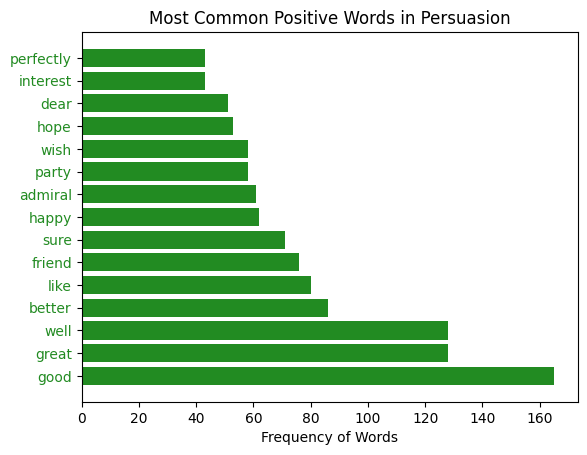
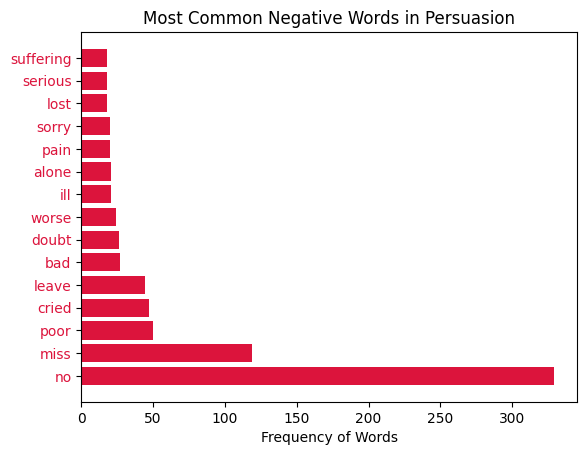
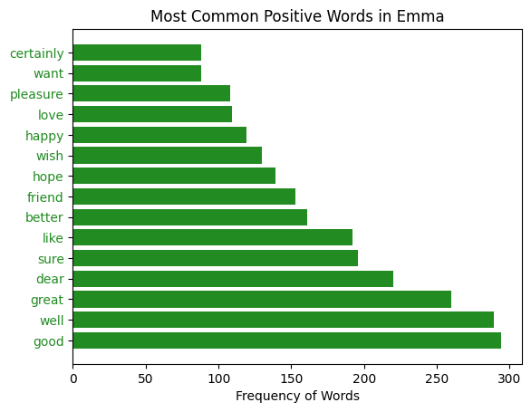
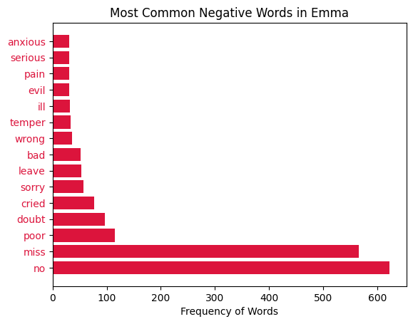
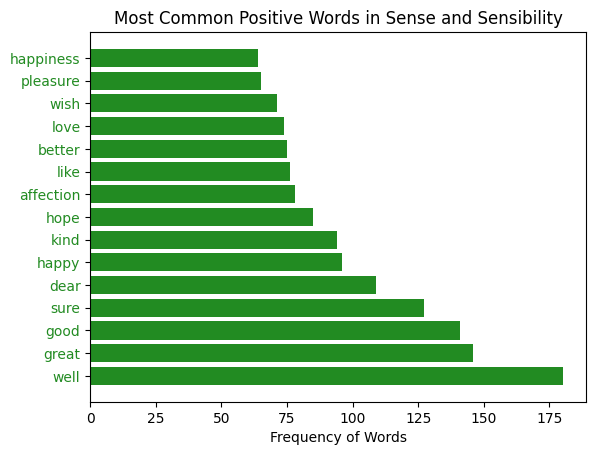
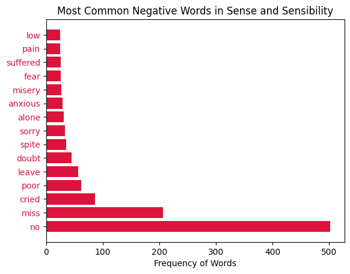
By comparing three different texts from Jane Austen to ‘Pride and Prejudice’, I can see some of the similarities and differences between her different novels and see if she has a distinct style in her writing. Similarly to the previous visualization, I chose to focus on the most common positive and negative words between Jane Austen’s works, like Persuasion, Sense and Sensibility, and Emma. The most common positive words that occur in all four of Jane Austen’s novels are ‘happiness’, ‘pleasure’, ‘love’, ‘hope’, ‘friend’, ‘better’, ‘like’, ‘sure’, ‘dear’, ‘good’, and ‘great’. For the negative words, the most frequently occurring in all four novels are: ‘pain’, ‘sorry’, ‘doubt’, ‘poor’, ‘miss’, and ‘no’. ‘No’ is the most common negative word in all four of the novels, which show how the characters in Jane Austen’s novels are not afraid to express themselves. The minor variation in terms of ranking may indicate that Jane Austen’s style of writing may have evolved throughout the years.
#8. Most Common type of words in each novelpnp_pos = nltk.pos_tag(pnp_words)persuasion_pos = nltk.pos_tag(persuasion_words)emma_pos = nltk.pos_tag(emma_words)sns_pos = nltk.pos_tag(sns_words)df_pnp = nltk.FreqDist(tag for (word, tag) in pnp_pos)df_persuasion = nltk.FreqDist(tag for (word, tag) in persuasion_pos)df_emma = nltk.FreqDist(tag for (word, tag) in emma_pos)df_sns = nltk.FreqDist(tag for (word, tag) in sns_pos)fig, ax = plt.subplots()x = ['S&S, 1811', 'P&P, 1813', 'Emma, 1815', 'Persuasion, 1817']y1 = [df_sns['NN'], df_pnp['NN'], df_emma['NN'], df_persuasion['NN']]ax.bar(x, y1, label='Nouns', color ="pink")ax.legend()plt.title('Frequencies of Nouns in Jane Austen Novels')plt.show()fig, ax = plt.subplots()x = ['S&S, 1811', 'P&P, 1813', 'Emma, 1815', 'Persuasion, 1817']y2 = [df_sns['VB'], df_pnp['VB'], df_emma['VB'], df_persuasion['VB']]ax.bar(x, y2, label='Verbs', color ="hotpink")ax.legend()plt.title('Frequencies of Verbs in Jane Austen Novels')plt.show()fig, ax = plt.subplots()x = ['S&S, 1811', 'P&P, 1813', 'Emma, 1815', 'Persuasion, 1817']y3 = [df_sns['JJ'], df_pnp['JJ'], df_emma['JJ'], df_persuasion['JJ']]ax.bar(x, y3, label='Adjectives', color ="mediumvioletred")ax.legend()plt.title('Frequencies of Adjectives in Jane Austen Novels')plt.show()
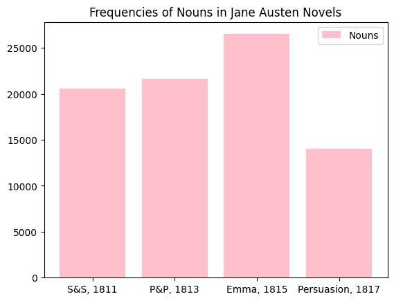
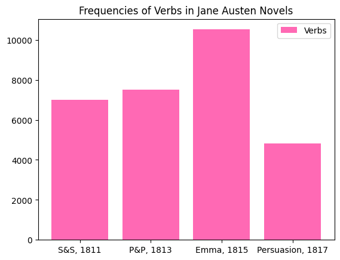
Overall, when analyzing the three graphs using parts of speech, nouns appear the most frequently throughout Jane Austen’s novels. This analysis indicates that the writing style of Jane Austen tends to focus more on the character, the location, or the thing as opposed to the actions or the descriptive language. I found this to be the most surprising because as I was reading the novels, I always believed that Jane Austen’s style of writing was very descriptive, which really immersed the reader into the novel. Adjective frequency was ranked second, which shows that Austen’s writing style is still very detailed and creative, and description of characters is still essential to the plot of the story. Verbs came in last, which suggests that Austen’s writing focuses less on action and movement, but rather it focuses more on the dialogue between the characters.
Discussion:
With the completion of this project, I was able to gain a deeper appreciation for Jane Austen’s sophisticated and imaginative writing style. Jane Austen’s distinctive style of storytelling and the kinds of themes she includes in her stories, especially in “Pride and Prejudice,” became clearer to me after exploring them through a variety of visualizations, including word frequency, network visualization, sentiment analysis, and common positive and negative words. By this research, I was able to gain a deeper appreciation for the complex language of Jane Austen’s novels and the importance of her word choices to the growth of her characters and the progression of the plot. While I saw some subtle (possibly time-related) shifts in her writing style across her other novels, comparing “Pride and Prejudice” to them showed me that there isn’t all that much variation. As communication is such a central element in Jane Austen’s novels, it is unsurprising that the author places a higher value on dialogue and character growth than on action and description. With this data analysis research and the development of these data visualizations, I was able to obtain a deeper understanding of the novel and a greater respect for the author’s attention to detail and brilliance.